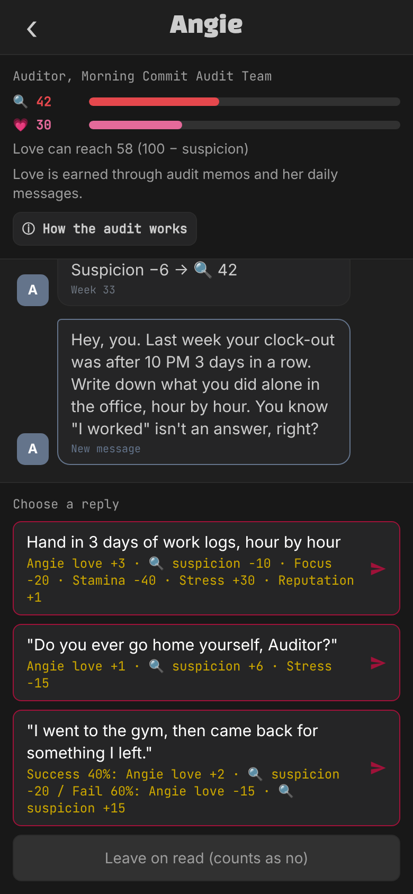
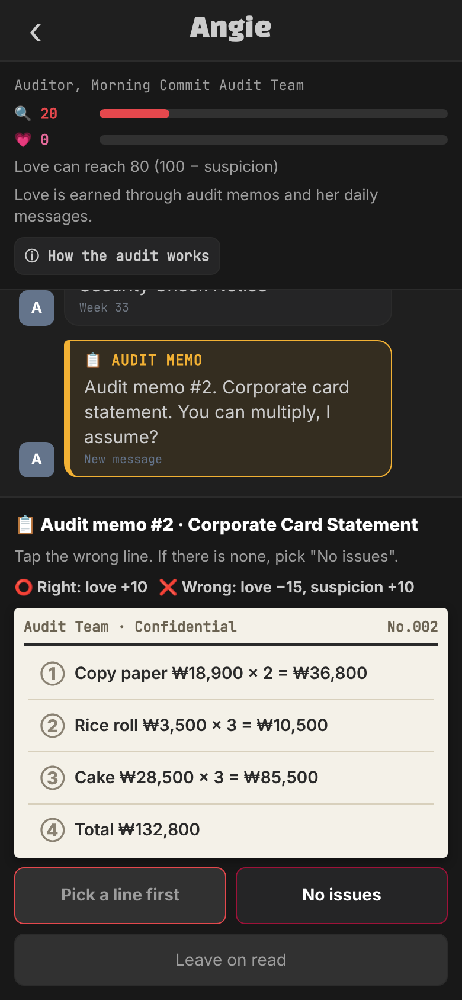

Angie guide
Angie, the auditor at Morning Commit, the rival big company. Suspicion, audit memos, the 11 charges and disciplinary firing: how to go from auditee to husband
An auditor on Morning Commit's audit team. The strictest person in the industry, who calls you in on your first day as a subject in a data-leak investigation.
- Join Morning Commit (the rival big company) as an experienced hire and the audit begins. You start at suspicion 80 and affinity 0.
- 2 gauges: 🔍 suspicion and 💗 love. Love can never go over 100 − suspicion, and the crush invite, confession and proposal come only at suspicion 0.
- Affinity only rises through the audit memo every 3 weeks (a find-the-wrong-line quiz) and her daily audit messages. At Morning Commit, suspicion 100 means a disciplinary firing on the spot (the run ends) ⚠️
- Played well, it is surprisingly fast: get every memo right and suspicion soon hits 0, and with steady dates you can make it to marriage.
Angie's route is less a dating sim and more an audit survival game 😅 Trade stocks and it is Stock addiction, pre-buy a limited item and it is Launch info leak, 3 overtime slots and it is Working alone at night… Angie sees it all. But live clean and solve her memos carefully, and you will hear Hey, you. You like me, don't you?
How to meet her#
| Item | Condition |
|---|---|
| Company | Working at Morning Commit (no title needed) |
| How to get into Morning Commit | The recruiter's It's an experienced-hire role at a big company. Morning Commit.: week 20 on, while you are at the startup, freelancing or at the foreign company, with no Morning Commit on your record. So it only comes after you have moved once from the first company |
| First message | 3 messages at the end of your first week at Morning Commit: [Morning Commit Audit Team] Security Check Notice for Experienced Hires → Audit Room, 7th floor → as of today you are under continuous audit |
| Start | Suspicion 80, affinity 0 (the Romantic at heart run perk does not apply) |
| Replies at the first meeting | Effect |
|---|---|
| Notice: Understood. I'll be there on time. | Suspicion -3 |
| Notice: I returned my old work laptop. I have the return receipt. ⭐ | Suspicion -5, stress +5 |
| Notice: Why me? I didn't take anything. | Suspicion +5 |
| Audit room: Ask me anything. I have nothing to hide. ⭐ | Suspicion -5, stamina -10, stress +10 |
| Audit room: I heard you're famously strict. | Suspicion +3 |
| Leaving the notice or the audit room on read | Suspicion +10 |
Her own system: audit memos and suspicion#
- Gauges
- 🔍 Suspicion 0 to 100 / 💗 love is capped at 100 − suspicion
- Audit memo
- 1 every 3 weeks. Her main source of affinity
- Daily audit messages
- 1 every week. Strong (60+), medium (30 to 59) or weak (29 or less), by suspicion
- End of the week
- Only the single biggest charge that week + the clean living deduction
- Relationship stages
- The crush invite, confession and proposal only at suspicion 0
- While dating or married
- Suspicion 11 or more at the end of a week ends it with I just can't trust you (a divorce if married)

📝 Audit memos (find the wrong line)#

- 6 kinds: Interview Schedule (dates, weekdays), meeting room schedule (times, durations), Corporate Card Statement (unit price × quantity, total, 10% tax), Weekly Work Log (minus the 1-hour lunch), inventory ledger (in, out) and travel expense claim (period, nights, daily allowance, lodging).
- Difficulty: easy is 3 lines, normal 4, hard 5. Kind and difficulty are random.
- Exactly 1 line is wrong, or about 20% of the time it is No issues.
- Each line is checked only against the value on the line right above it (even if that line is wrong, the next line carries on from the wrong value). So it never looks like 2 lines are wrong.
- In the interview schedule, meeting room schedule and inventory ledger, the first line is the starting point and is never the wrong line.
| Difficulty | Right answer | Wrong: affinity | Wrong: suspicion |
|---|---|---|---|
| Easy (3 lines) | +7 | -20 | +15 |
| Normal (4 lines) | +10 | -15 | +10 |
| Hard (5 lines) | +13 | -10 | +5 |
| Left on read | — | -20 | +20 |
The easier the memo, the bigger the penalty for a wrong answer (easy: -20, suspicion +15). Don't skim it because it is only 3 lines; get out the calculator 🧮 When you answer, ⭕/❌ shows right before the result.
📨 Daily audit messages (1 a week)#
| Suspicion | ① Cooperate | ② Push back | ③ Talk your way out (a gamble) |
|---|---|---|---|
| Strong (60+) | Suspicion -10, affinity +3 / stress +30, stamina -40, focus -20, reputation +1 | +6, +1 / stress -15 | 40%: -20, +2 / fail +15, -15 |
| Medium (30 to 59) | -7, +3 / stress +20, stamina -30 | +4, +1 / stress -10 | 50%: -12, +2 / fail +10, -10 |
| Weak (29 or less) | -3, +3 / stress +5, stamina -10, focus -10 | +2, +1 / stress -5 | 60%: -6, +2 / fail +6, -5 |
(The first number is suspicion, the second affinity.) Failing to talk your way out hurts, so at the strong level it is actually a loss, and at medium and weak it is still worse than cooperating. The right answer is always ① Cooperate, but it costs a lot of stamina and stress, so take some rest that week. Leaving it on read is suspicion +10, and a [Resent] comes the next week.
⚖️ The 11 charges at the end of the week (only the biggest one applies)#
| Charge | What triggers it | Suspicion |
|---|---|---|
| Stock addiction | Trading stocks 2 weeks in a row | +5 |
| Surprise audit | In a rotation audit week (every 4 to 6 weeks), you hold collectibles or bought some since the last one | +5 |
| Insider trading | A stock you hold rises +30% or more in a week (50% chance) | +4 |
| Launch info leak | Buying a launch pre-order | +4 |
| Suspected tax evasion | Resale profit | +3 |
| Quick cash, suspected embezzlement | Using the pawnshop | +3 |
| Using development info | Owning 2 or more properties | +3 |
| Hoarding | 4 or more of the same collectible in a rotation audit week | +2 for each one |
| Working alone at night | 3 or more overtime slots in your schedule | +2 |
| Side job | A side project in your schedule | +2 |
| Outside contact during work hours | 10 or more chat messages with other heroines that week | +2 |
| Clean living (all of these add up) | Suspicion |
|---|---|
| 0 investment trades that week | -2 |
| S or A rank on tickets that week | -3 |
| Leaving on time (0 overtime slots) | -1 |
| Morning Commit lead's affinity 70 or more | -2 |
If you are hit with a charge, an audit notice (OK only) comes the next week. When suspicion drops to 50 or less you get Suspect → Witness, and at 0 a Cleared notice, once each (in the week the Cleared notice comes, relationship stages take a break). In the witness notice, I'll prove I'm clean to the end. is suspicion -3, So I can relax a bit now, right? is +3, and leaving it on read is +5 😉
0 trades + S or A tickets + leaving on time + lead affinity 70 is -8 in a week with no charge, and add cooperating with the daily message (-10/-7/-3) and even starting at 80 you reach 0 in a few weeks. Joining at week 21, suspicion usually hits 0 around week 28. During Angie's route, take a break from investing, side projects and overtime.
Raising affinity#
Dates, gear and Romantic at heart do not raise Angie's affinity. There are 2 ways up.
- Good reply: right answers to the audit memo every 3 weeks (+7 to +13), and the first reply, cooperating, to her weekly audit message (+3).
- Bad reply: bad replies to her lines while dating are affinity -8 to -15, with suspicion on top.
- While dating, even nice-looking replies like expensive dates or trips come with suspicion. Pick the modest replies with no suspicion shown (spicy rice cakes from the neighborhood, a handwritten letter).
- Any suspicion left blocks that much affinity (at suspicion 30, affinity maxes out at 70).
Results by memo skill#
Joining Morning Commit and playing to week 100 with ① Cooperate on daily messages, 0 investing, 0 overtime and 3 date slots.
| Setup | Ending |
|---|---|
| Every memo right, S tickets | Marriage 100%, clean 100% |
| Every memo right, B tickets | Marriage 100%, clean 100% |
| 80% memo accuracy | Marriage 100%, clean 80% |
| 60% memo accuracy | Marriage 85%, clean 45%, dating ending 15% |
Getting memos wrong often keeps affinity from filling, which tends to delay the marriage, and then Clean Audit Report (married + suspicion 0 every week from week 81) slips away. Under these conditions there is no disciplinary firing and no I just can't trust you breakup.
Crush → confession → dating#
- Crush invite (suspicion 0 + affinity 80, when you are not dating anyone)There's a field audit this Saturday. I need 1 person to come along. → I'll go. My first field audit. I'm excited. I'd kind of like to rest this weekend or leaving it on read ends it.
- From the crush on, she drops the formalityand starts with Hey, you. Her daily messages switch to the casual version too.
- Confession (suspicion 0 + 100)Hey, you. You like me, don't you? Your face changes every day a memo arrives. → Yeah. Let's date. Put it on record. or Don't you like me, Auditor? (stress +5). I'd like to stay good coworkers. ends it.
Marriage conditions#
Suspicion 0 + affinity 100 + date progress 60 while dating → The audit result is in. Approved. I've prepared all the paperwork. Just sign. → I'll sign. Audit me for life. I'm not ready yet. or leaving it on read means it never comes again. Dates do not raise her affinity, but progress only builds through dates, and a week with 0 dates is -30.
While you are dating, suspicion of 11 or more at the end of a week ends it the next week with …I just can't trust you. We're back to auditor and auditee. (a divorce if married). A wrong easy memo (+15) barely stays under 10 thanks to that week's clean living (-6 to -8), but add one charge (+2 to +5) or a pushback on the daily message (+2 to +6) and you are over at once. Once you start dating, cut out stock trades, limited items and 3 overtime slots completely, and be extra careful in weeks you got a memo wrong. (Even at 80% memo accuracy you reach marriage. Clean living carries you.)
Living together, newlyweds, parenting#
None of the three. On Angie's route no move-in offer, newlywed life or baby offer comes. After marriage, chores (a week with 0 is -30) and keeping suspicion at 0 are all there is.
All endings#
- Condition
- Dating Angie at week 100 (not married)
- Reward
- 1 Rare Pack
- Condition
- Suspicion 0 + progress 60 + affinity 100 → accept the proposal → married at week 100
- Reward
- 1 Legendary Pack
- Condition
- Married to Angie + suspicion 0 at the end of every week from 81 to 100 (so you must be married by week 80)
- Reward
- 1 Rare Pack
- Condition
- Suspicion 100 while working at Morning Commit → the run ends at once at that week's close. Or suspicion 100 after leaving Morning Commit at the crush stage or beyond → only the ending is recorded and the run goes on
- Reward
- 1 Rare Pack (if the run ends before week 100, CP and coins are 0)
Married + clean records Clean Audit Report and Lifetime Audit Subject together. Lifetime Audit Subject is the only one of these 6 heroines' endings that pays a Legendary Pack ✨
Fail and breakup conditions#
| Situation | Result | How to avoid it |
|---|---|---|
| Suspicion 100 at Morning Commit (even once that week) | Disciplinary firing, the run ends at once | Starting at 80 right after joining: no wrong memos, no leaving things on read |
| Suspicion 11+ at the end of a week while dating or married | I just can't trust you → over / divorce | Live with 0 charges |
| Leaving Morning Commit before a crush | Angie is gone for good (chat deleted) | No job changes before the crush |
| Leaving Morning Commit at the crush stage or beyond | Nope. If anything, now it's personal: the audit goes on, and at 100 a farewell + the disciplinary firing record | Keep solving memos even after leaving |
| Declining the crush invite or confession / affinity 0 | Over: she stays a formal auditor; notices and daily messages continue, memos stop | Accept |
| Declining the proposal, leaving it on read | The proposal never comes again | Accept |
Spoiler: the 2 ways the disciplinary firing ending plays out
If you are fired at the crush stage or beyond, Angie's stamp is on the papers: …I'm the one who recorded it. Better me than someone else. and the stamp is a little smudged. If you had already left the company, her last message is Auditee record closed. Do not contact me again.
FAQ#
- Should I stay away from stocks and real estate completely?
- Only the biggest charge applies at the end of a week, so you can make up for one now and then. But while dating, suspicion 11 is the limit, so from the crush on it is safest to stop trading, keep 1 property and hold no collectibles.
- Can I recover after getting a memo wrong?
- Yes. A wrong answer only costs suspicion and affinity, and you can bring them back down with cooperating replies and clean weeks. But right after joining Morning Commit (suspicion 80), a wrong answer plus leaving something on read can reach 100.
- Does Angie count in the juggling odds?
- She counts in the juggling odds, but not in the head count for Casanova, Octopus or the group chat exposé.
- Does buying the perfume speed things up?
- No. Angie gets none of the gear or Romantic at heart bonuses. The memo numbers are exactly what you get.